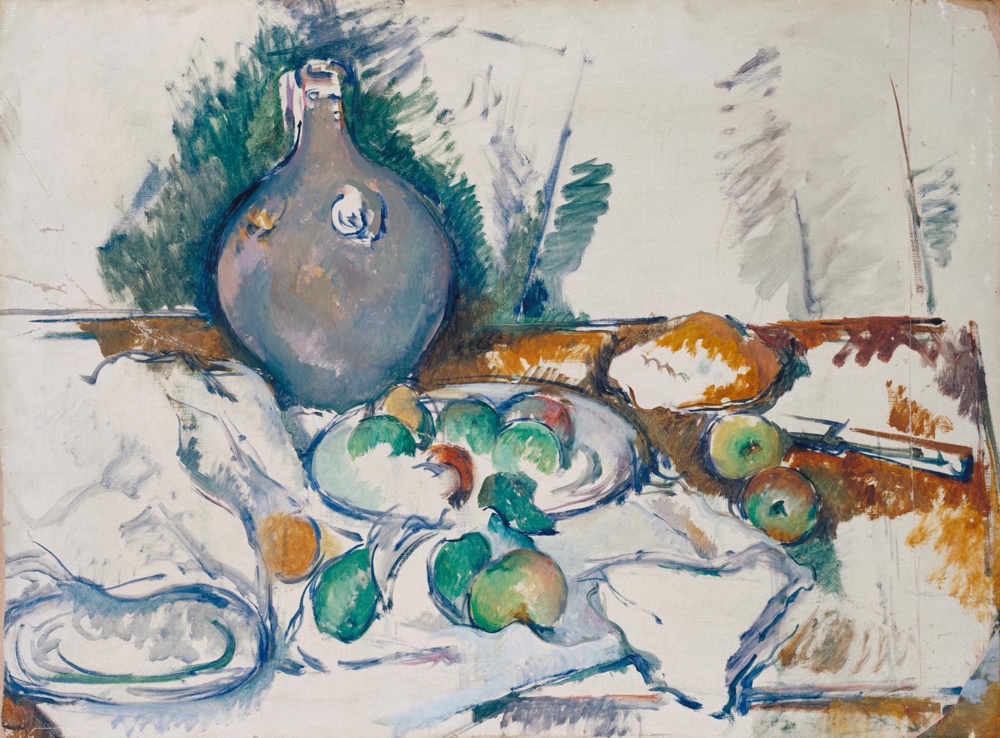

- MOVIE
- ART TERM

Paul Cézanne, Still Life with Water Jug c.1892–3, Tate
ART TERM
One of the principal genres (subject types) of Western art - essentially,
the subject matter of a still life painting or sculpture is anything that
does not move or is dead.
Still life includes all kinds of man-made or natural objects, cut flowers,
fruit, vegetables, fish, game, wine and so on. Still life can be a celebration
of material pleasures such as food and wine, or often a warning of the ephemerality
of these pleasures and of the brevity of human life (see memento mori).
In the hierarchy of genres (or subject types) for art established in the
seventeenth century by the French Academy, still life was ranked at the bottom
- fifth after history painting, portraiture, genre painting (scenes of everyday
life) and landscape. Still life and landscape were considered lowly because they
did not involve human subject matter.
In modern art simple still life arrangements have often been used as a relatively
neutral basis for formal experiment, for example by Paul Cézanne, the cubist
painters and, later in the twentieth century, by Patrick Caulfield. (C) TATE